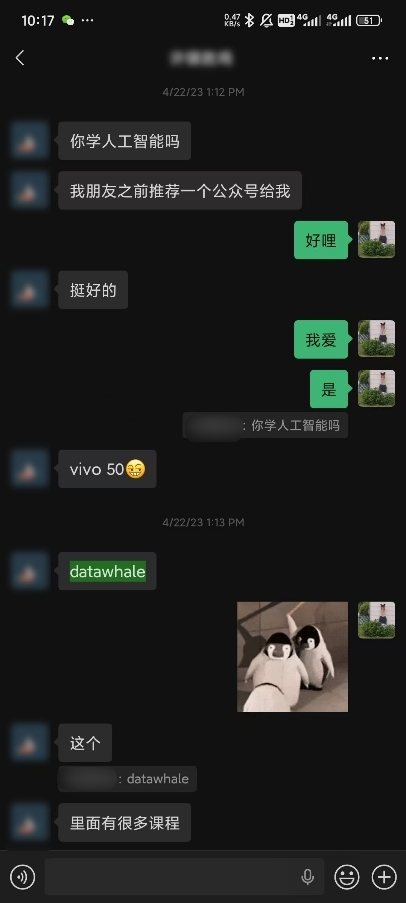
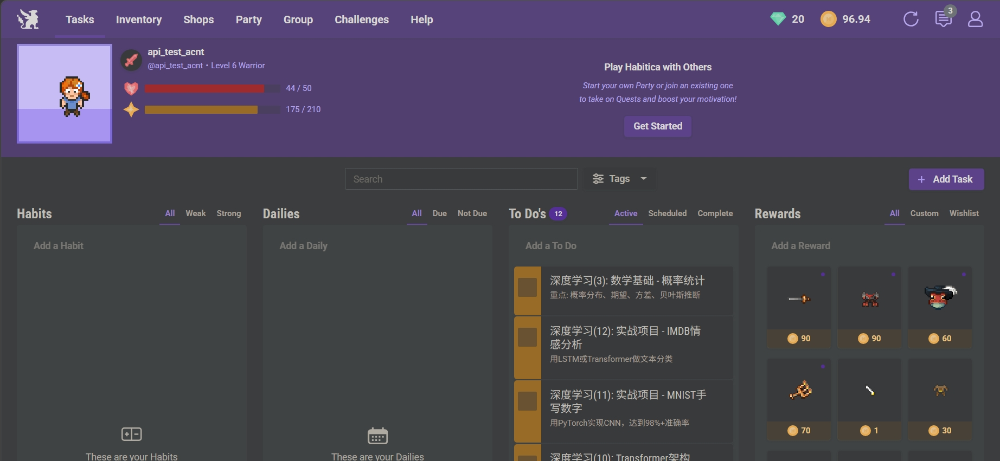

前言
这是一个关于来自农村的哥们儿与datawhale相遇的曲折故事。
我来自潮汕一个小村。谈起潮汕大家更多会想起经商的氛围、传统习俗或热闹的年，但却难会是人工智能或者前沿科技。潮汕是一个听起来就离高新科技很远的地方。
我是00后，小学时代智能机还没普及，我爸爸用的是屏幕闪着绿光的诺基亚，小孩玩的是跳格子、沙子过家家、或者打架……我对手机和电视也不感兴趣。所以我怎么能想到呢？那个早早醒来看着露降发呆的小孩儿，今天会到遥远的大学学习人工智能、会和datawhale产生联系、会盯着屏幕写下这段文字……
刚到大学的我手足无措，我报名了学校里的机器人社团，希望能从中获取帮助。群里的同学似乎什么都懂，而我却几乎是他们的补集——只要我不懂什么，他们就懂什么。我不知道什么是Ubuntu、什么是ACM、什么是类成员函数……甚至我不知道去哪里学习，但是我不敢提问，因为我深深地害怕被别人嘲笑。
加入学校的社团有一定的要求，现在看来它真的很简单——社团要求我们需要有一个GitHub账号，并加入社团的GitHub组织——可是什么是GitHub，当时我连这个也不明白，甚至连去哪里搜索相应的教材都感到茫然。我问社长应该怎么办，社长说：
“搜一下就明白了。”
大概就是这样一种氛围，后来我也不敢发问，静静地潜水，看着群里什么时候冒出来没听过的名字便记下来搜索。后来我还没来得及加入社团，学校的资金给了别的学院，社团也直接解散了。
三过家门
我和datawhale的相遇是比较波折的，我也并非对datawhale“一见钟情”。因为各种原因，我错过了几次，三过家门，最后才真正走进到datawhale之中。我觉得还蛮真实的，或许能代表一部分和我一样的人儿。在我进进出出的这个过程中，datawhale一直在进步——它一直在前进，通过不断地优化学习的形式和流程，让学习的门槛变得越来越低。我决定把这段经历写出来，也是希望鼓励这些和我一样的“放弃过”的朋友们：
“datawhale对于新人的包容性是极强的，如果你曾经在中途放弃过，如果你还想参加datawhale的活动，那么欢迎随时回来”
好了，接下来讲讲，我是怎么遇到datawhale的。
23年的某天，朋友的朋友告诉他有一个公众号叫datawhale，上面有很多教程。他转而告诉了我，于是我第一次知道了datawhale这个名字。他跟我说上面有深度学习的内容，让我可以去看看。可是当时我连机器学习基础都没有，我觉得自己是不配学习这么高深的内容的。

当然我还是关注了datawhale的公众号，后来也报名了我的第一次datawhale训练营。第一次接触这种学习形式我感到陌生而又警惕——因为就在那时，我的一位朋友刚为了一个所谓的python课程花去5000元，而我同样为了一个宣传提供工作机会的剪辑课程被卷走5000……在写下这段文字的这天我在背单词，看到这么一句例句——“The poor may be especially susceptible to such scam”——“穷人尤其容易受到这类骗局的影响”……联想起前前后后的这些故事，我真的有些哭笑不得。
于是，我与datawhale的第一次相遇，就在我的“创伤后应激障碍症状”后结束。我当时无法相信有这样一个社区能够免费教大家知识，这确实超出了我当时的认知。于是这件事情很快被我抛之脑后了。23年年底datawhale发起了AI夏令营第三期，我又一次报名了。说实话，我是奔着实习证明和奖学金去的。然而，这一次的学习我仍然以失败告终。因为活动时间设在期末考试，我再次因为各种原因，虽然加入了学习群，却仍然错过了这次机会……
机缘成熟
在最后真正参与到datawhale学习活动之前，我接触了学校的机器学习课程，也有了一定的基础。也算是机缘成熟，24年年底我再一次报名了datawhale的大模型微调的AI训练营。在多次默默的观察中，我逐渐觉得datawhale不需要我那么警惕，我开始尝试接触它。
为了逼自己走完全流程，一向不习惯在网络上展示自己的我，把自己在学习群里的昵称改成了实名，并在自我介绍的接龙中详细介绍了自己，为的就是让自己觉得——“大家都知道我了，我怎么好意思不完成呢？”在今天我对datawhale这种很细节的运营仍感到十分感动，接龙这种形式真的起到了很正面的效果，让一些内向胆小的学习者能够有一次机会。
在技术交流会的直播中，葱姜蒜老师很耐心地解答每一个问题，让我感到有些特别。我也鼓起勇气问了几个问题，具体的内容我甚至已经忘记，只记得一些迷迷糊糊的影子，但datawhale的好印象却由此走入我的心中。那一次学习结束之后，我就参加了datawhale的宣传团队，后来就逐渐地走入鲸英助教的团队中……
留下
后来我又参加了多次datawhale的活动，参加了更多的冬令营、夏令营以及组队学习，从学习者到助教，从一个安静的观众到技术交流会的分享者，在这个过程中，我认识了很多优秀的人，他们有学生也有教师、来自计算机专业也来自人文专业……让我最感到珍贵的还是大家的真诚与包容，我想这也是社区能够一直保持活跃的年轻咒语。
“datawhale是干啥的？”
如果是几年前我会说“不知道”，如果是在我参加了几次学习活动之后我会说“是一个学习AI的地方”，如果是在主持活动我会说“datawhale是一个开源学习社区”，但如果你问我datawhale具体是什么，我反而答不上来，因为这里的人来自各行各业，来自五湖四海。这里汇聚了许多聪明而活跃的大脑，我们讨论AI的最前沿，也讨论美食，我们讨论哪一个模型更好，也讨论怎么养生。
所以我觉得，datawhale更像是一群热爱分享的人的一个聚集的社区吧，这里是真的“有很多课程”（Callback前面的聊天记录），关于LLM的、关于Agent的、关于数学建模的……太多太多，而且你可以直接向课程作者提问，你见过哪本些大学教科书，会把作者当作配套资料的呢？哈哈
回看我的几次“错过”，觉得还是有点惋惜，如果是今天，我就不会在门口一直这么等待了。
过去和未来
我是一个比较热爱分享的人。高中时期，我就爱为同学解答疑惑。学霸们一般不愿意回答太简单的问题，但我倒是很乐意，所以大家也喜欢问我。高二时晚自习时间延长，大家总在晚自习还没结束时就偷偷溜走……我是班长，为了留住大家，我与班上的几个同学一起组织了晚自习答疑小会，我们在晚自习的最后一节课为大家讲解题目、回答同学们的疑惑。大家很高兴也觉得很新奇，因为总是只有老师才站在讲台上，现在却换成一个每天一起吃饭睡觉的人，倒是很有趣的一件事情。
今天看来，这件事情和datawhale“开源学习”的内核，又有什么区别呢？我把我所知道的，很自愿地无偿地分享给大家，这不正是“开源”吗？我想这也是我最终会参加datawhale的活动，并乐意作为助教的原因吧。在高中，我通过帮我的同学们学习，自己也学到了更多，学得更加扎实，这和datawhale的“领学员”、“助教”的设立，又有什么本质区别呢？
所以，正在看文章的你，或许你是人工智能行业的关注者，或许是本科生、硕士或者博士，或许你热爱分享，或者你希望认识更多关注AI的朋友，那么datawhale是一个很好的选择，何妨一试呢？
找找看有没有小伙伴和我一样
candy跟我说，这是一次展示自己的好机会，让我可以分享一下我最近正在做的项目。我觉得她说的真对。所以在最后一节中，我想分享一下我正在做的一些工作。如果你对我的工作感兴趣，欢迎与我交流呀，我很期待能够与你交流。
我经常有这么一个幻想，或许有一天我们能做到让人脑接收如同隐变量一样的内容，而不是通过“具备明确意义”的文字或者语言，能不能这么说呢，或许应该叫做“具体的知识在人脑中的表征”——如果我们能向人脑输入这类“表征”，而跳过了人脑经过理解文字等形式传递的信息而再在大脑里形成认知的过程，那么那时，人类的学习或许就和存储卡一样可以复制粘贴了——听起来有点可怕，思想钢印或可成行也，哈哈。
如果现实一点的话，我希望我在学习的时候，能够有一个更加全局的视角，而不是必须跟随着书本进行太过于线性的输入。我是一个比较倾向自学的人，我经常看书自学，因为我觉得书本是很稳定的、可重复的，尤其是一些数学、物理或者计算机类的经典书籍，我认为它们是经过时代的验证的。但有时我觉得我的学习时间复杂度简直是 级别，因为每当我接触到一个新的内容，我总是需要一个一个去对比——这个新的内容和我之前的知识点存在什么样的关系？只有这样我才能为这个知识点找到它在我的脑海中的安身之所。
但这件事情往往是无边界的——一个点的疑惑往往能牵扯出一张新的网络，而这些新知识却又依赖于更新的知识。所以我希望有这么一个工具/导师，能够：
- 为我展示一本书中，所有知识点之间的联系
- 为我设立一个学习的大致规划，避免我陷入到一个问题太久
- 评估我的疑惑，看看它是否和书籍相关
- 一个某一个疑惑在该书讨论的范围内，它有能力告诉我，书中哪些位置有相关的内容，并要严格根据与书籍
上面的需求源自于我对AI的一些看法：
- 直接询问AI，无法避免AI的幻觉问题，而且总有AI的训练中涉及不到的内容
- 直接询问AI，回答的内容是零碎、不成系统的、且对于同一个内容的多次介绍，都是不相同的。当然这并不是它的缺点，只能说是它的特点
当然当然，因为我目前能力还很有限，这个目标对我来说很庞大。我为这个完整的构想起名为“书本精灵”，希望它能对一本书非常熟悉，就像它是书中的精灵一样。为了解决这个大问题，我把它分成了几个小项目，下面汇报一下我的进展，如果你感兴趣的话欢迎找我交流~
我把这个项目分成
- 知识图谱构建、查询与可视化。这部分我目前正在拿人教版的高中物理教材做尝试，我从政府官网下载了pdf（不得不吐槽一下，真的很难下载，在浏览器只能预览不能下载，还得靠分析请求后用python跑代码下载），然后用minerU转为markdown和json格式的形式。我尝试了用
llamaindex和graphrag来构建知识图谱，但是目前效果还不是很好，有很多东西我还没有搞懂 - 交互体验。我尝试过用chanlit简单地构建了一个聊天的UI，并且写了几个FunctionTool，给llamaindex调用，通过FunctionTool来让我的模型能够查询知识图谱和文本向量，并能在habitica为我规划学习任务。如果您不知道habitica是什么，可以参考下面的图片~
